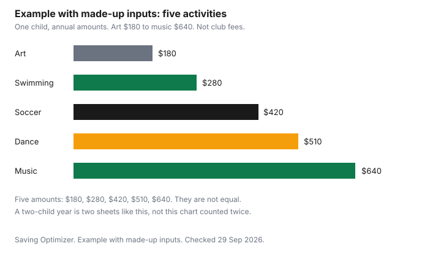

Kids · Canada
Kids' Activities in Canada Without Overspending: Registration, Gear and the Hidden Season Costs
The registration fee is the number on the poster. The season cost is that fee plus gear, travel, fundraising, and the tournament the poster mentions in a footnote. Families who add a second activity, or a second child, feel the gap between those two numbers. This guide is a worksheet for the full season, the places that publish fee help, and the provincial activity credits that still exist on the pages below. It does not quote a national average, and it does not rank sports, studios, or retailers.
Disclosure: Sports retailer offers and used-gear offers are offer types. Saving Optimizer may earn a commission if a partner link is added later. No partnership is claimed. An offer does not change whether a helmet is safe to buy used, or whether a credit applies. Education only.
Key takeaways
- Write fee, gear, travel, and hidden costs for each activity before you register for a second one. The blank table is the one to fill. The dollar example is made-up.
- A recreational stream and a competitive stream are different calendars. Price the calendar you were handed.
- Check municipal fee assistance, Canadian Tire Jumpstart, and KidSport before you pay. This guide does not quote their grant amounts.
- Do not assume a federal children's fitness or arts credit is on your return. Quebec, Manitoba, Nova Scotia, and Yukon publish provincial credits. Amounts below are from those pages.
- A day camp can be a child care expense when it meets the Income Tax Act. Sport registration is not automatically the same deduction.
Build the full season cost: fees, gear, travel, fundraising and tournaments
One row per activity, four money columns, filled from the club's sheet. The fee is what you pay to join. Gear is what the child needs in order to attend the first session, including a uniform or shoes the fee does not cover. Travel is the getting there: gas, a bus, or a transit pass you would not otherwise load. Hidden costs are the rest: fundraising quotas, photos, team parties, competition entry, and a costume or an instrument rental. If the sheet says "about," write the ceiling you will not cross and date it.
Winter clothing for getting to the rink is not the activity fee. That kit is the winter gear guide. A once-a-year registration belongs in a sinking fund so September does not spend the grocery week. The zero-based month is where you assign both.
| Activity type | Fee | Gear | Travel | Hidden costs |
|---|---|---|---|---|
| Team sport | ||||
| Swimming | ||||
| Music | ||||
| Dance | ||||
| Arts | ||||
| Camps |
Recreation vs competitive streams
A recreational program usually sells a session: a night a week, a pool lane, a recital at the end. A competitive program sells a calendar: extra practices, festivals, tournaments, and travel. The second calendar is why two children in the "same" sport can cost different amounts. Ask which stream the registration form is for, and ask for the away dates before you say yes. If the dates are not published, the travel column stays as a ceiling, not as zero.
Minor hockey is the worked version of this split, with its own worksheet, on the hockey cost guide. Use that page for the rink. Use this page when the household has more than one activity, or more than one child.
City recreation fee assistance and charitable grants
Cities and towns run fee assistance for their own programs, and sometimes for affiliated clubs. The name, the income test, and the deadline are local. Ask before you register, because some subsidies have to be approved first. This guide does not quote a city amount.
Canadian Tire Jumpstart lists individual child grants. The home page checked 29 September 2026 does not print a grant amount or an income cutoff. Read the individual child grants page. KidSport Canada says to apply through a local chapter. The national home page does not state a national dollar amount. Follow the chapter where you live. A grant is not income until it is approved. Do not subtract it from the worksheet before that.
| Help | Where to check |
|---|---|
| Municipal recreation fee assistance | Your city's recreation department. Ask which activities qualify and whether approval comes before payment. |
| Canadian Tire Jumpstart | Individual child grants. Confirm eligibility on that page. |
| KidSport | KidSport Canada, then the chapter for your province or territory. |
Gear: rent, swap or buy used
Rent when the child will use the item for one session and the rental is less than a purchase they will outgrow. Buy used when you can inspect the item, it is complete, and it is not a single-impact helmet. Health Canada's second-hand shopper sheet says bicycle helmets are single-impact and does not recommend buying them second-hand or borrowing them. Ice hockey helmets need a CSA sticker and should not be bought after a major impact, past five years, or with parts missing. The secondhand gear guide is the full check. The used household guide covers everything that is not safety gear. A retailer offer or a used-gear offer changes the price of an item that already passed the check.
Swaps with families a year ahead of you work for skates, dance shoes, and instruments when you agree the condition. They work poorly for a helmet. Write the replacement year on the worksheet so a "free" pair of skates does not hide a sharpening bill and a new pair in March.
Provincial activity tax credits, where they exist
Do not assume a federal children's fitness credit or a federal children's arts credit is a line on your return. Check the CRA. Four provincial pages, checked 29 September 2026, still describe their own credits. This is not tax advice.
Quebec's tax credit for children's activities is for a resident on 31 December 2025 who paid, in 2025, to register a child in a non-school program of physical or artistic, cultural, or recreational activity lasting at least eight consecutive weeks, or at least five consecutive days, or for a membership of at least eight consecutive weeks. Family income must not exceed $168,470. Keep the receipt. The credit amount is in Revenu Québec's instructions for line 462. This guide does not quote a percentage.
Manitoba's personal tax credits page lists, in the 2024 and 2025 columns, a fitness tax credit of $500 for children and young adults up to age 24, or $1,000 with a disability, and a children's arts and cultural activity tax credit on the same $500 and $1,000 pattern. Nova Scotia's 2025 package says you can claim fees paid in 2025 for a qualifying child, under 19 on 31 December 2025, in an eligible program, up to a maximum of $500 per child. Eligible fees can include administration, instruction, certain uniforms, certain equipment, and rental of facilities. They do not include accommodation, food, travel, or beverages. Yukon's 2025 package says you can claim up to $500 per child for the children's arts amount, for a child under 16, or under 18 if eligible for the disability tax credit. The Yukon children's fitness tax credit is a separate line on Form YT479. Check that form for the fitness amount. This guide does not quote it from the 5011-PC page.
A day camp is a different box from a credit. The Income Tax Act, section 63, current to 21 September 2026, treats child care that lets you work or study as a deduction, within annual limits of $11,000, $8,000, or $5,000. The CRA folio S1-F3-C1 lists a day camp or day sports school among child care services. An overnight camp is limited by the periodic amount, one-fortieth of the annual amount, times the weeks. A hockey registration is not, by itself, that deduction. Confirm with the CRA. The household checklist of other credits is tax credits middle-aged households miss.
A one-page family activity budget
Example with made-up inputs. Two children over a school year. Child 1: swimming $280, soccer $420, art class $180, total $880. Child 2: music $640 and dance $510, total $1,150. Household activity total $2,030. These are not club prices. The chart shows one child taking all five activities at those same made-up prices: art $180, swimming $280, soccer $420, dance $510, and music $640, which also totals $2,030. The table splits those prices across two children. Replace both with your own numbers.
| Child | Activities in this example | Made-up total |
|---|---|---|
| Child 1 | Swimming $280, soccer $420, art class $180 | $880 |
| Child 2 | Music $640, dance $510 | $1,150 |
| Household | Five activities across two children | $2,030 |

If the household total does not fit, drop an activity before the season starts, or move one child to the recreational stream. Adding a grant you have not been approved for is not a cut. The hockey worksheet is the place to test that one season in more detail.
Sources & date stamps
- Canadian Tire Jumpstart, checked 29 Sep 2026. Individual child grants listed. No amount or income cutoff quoted from the home page.
- KidSport Canada, checked 29 Sep 2026. Apply through a local chapter. No national amount quoted.
- Revenu Québec, tax credit for children's activities, checked 29 Sep 2026. 31 December 2025 residency. Eight weeks or five days. Family income not exceeding $168,470. Amount is in the line 462 guide.
- Manitoba Finance personal tax credits, checked 29 Sep 2026. Fitness and arts credits $500, or $1,000 with a disability, shown for 2024 and 2025.
- CRA Nova Scotia 2025 package, 5003-PC, checked 29 Sep 2026. Maximum $500 per child. Under 19 on 31 December 2025. Excludes accommodation, food, travel, and beverages.
- CRA Yukon 2025 package, 5011-PC, checked 29 Sep 2026. Children's arts amount up to $500 per child. Fitness amount is on Form YT479 and is not quoted here.
- Income Tax Act section 63, current to 21 September 2026, checked 29 Sep 2026. Annual child care expense amounts. Periodic amount is 1/40.
- CRA folio S1-F3-C1, checked 29 Sep 2026. Day camp and day sports school listed among child care services.
- Health Canada second-hand products sheet, page details 4 February 2021, checked 29 Sep 2026. Single-impact bicycle helmets. Hockey helmet rules are on the secondhand gear guide.
- Activity dollars in the example tables and the chart are made-up inputs.
Frequently asked questions
How much should a family budget for kids' activities?
Start from the full season, not the registration line, and add gear, travel, fundraising, and tournaments before you decide how many activities fit the year. The two-child example on this page is an example with made-up inputs and totals $2,030. Your numbers belong in the blank worksheet. There is no national average on this page.
What costs do registration fees leave out?
Uniforms or costumes, shoes, instrument rental, tournament hotels, fundraising buy-outs, and the cost of getting there often sit outside the posted fee. The true-season table leaves those columns blank on purpose. Fill them from the club's sheet before you register for a second activity.
Are there programs that help pay for kids' activities?
Many cities have a recreation fee assistance program. Canadian Tire Jumpstart and KidSport fund sport registration for eligible families. Amounts and income tests are on those sites, and this guide does not quote them. Check them before you register, because a grant often has to be approved before you pay.
Is it cheaper to rent or buy used gear?
It depends on the season and the item. A one-season rental can cost less than a purchase the child will outgrow, and a used item can cost less than either if it is safe and complete. Helmets are the exception Health Canada flags: do not buy a single-impact bike helmet used. Inspect anything you buy used before you pay.
Are kids' activity fees tax deductible?
Registration for sport or music is not automatically a deduction. Day camps can be child care expenses when they meet the Income Tax Act rules, including the reason you needed care. Provincial activity credits exist in Quebec, Manitoba, Nova Scotia, and Yukon, with limits on their own pages. This is not tax advice; confirm with the CRA and your province.